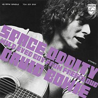
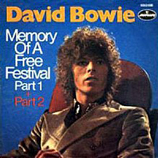

1969 - SPACE ODDITY |
||||
Not to be confused with David Bowie's self-titled debut album of 1967, this self-titled album is the one that featured a hit: Space Oddity. The shaggy-haired 22-year-old psychedelic folk-rocker had yet to perfect his own alien image, but the blue-and-green design, by op-art figurehead Victor Vasarely, provided a suitably space-age backdrop for Bowie's disembodied head to beam onto. It started a trend among many best David Bowie album covers, which would see him work with modern designers to ensure his record sleeves were as cutting-edge as the music inside. Photographer: Vernon Dewhurst | Designer: Victor Vasarely |
||||
SPACE ODDITY Ground Control to Major Tom Ground Control to Major Tom Take your protein pills and put your helmet on (Ten) Ground Control (Nine) to Major Tom (Eight, seven, six) Commencing countdown, (Five) Engines on (Four, three, two) Check ignition (One) and may God's love (Lift-off) be with you This is Ground Control to Major Tom You've really made the grade And the papers want to know whose shirts you wear Now it's time to leave the capsule if you dare This is Major Tom to Ground Control I'm stepping through the door And I'm floating in a most peculiar way And the stars look very different today For here am I sitting in a tin can Far above the world Planet Earth is blue And there's nothing I can do Though I'm past one hundred thousand miles I'm feeling very still And I think my spaceship knows which way to go Tell my wife I love her very much She knows Ground Control to Major Tom Your circuit's dead, there's something wrong Can you hear me, Major Tom? Can you hear me, Major Tom? Can you hear me, Major Tom? Can you.... Here am I floating 'round my tin can Far above the Moon Planet Earth is blue And there's nothing I can do UNWASHED AND SOMEWHAT SLIGHTLY DAZED Spy, spy, pretty girl I see you see me through your window Don't turn your nose up Well, you can if you need to You won't be the first or last It must strain you to look down So far from your father's house And I know what a louse like me In his house could do for you I'm the cream Of the great Utopia dream And you're the gleam In the depths of your banker's spleen I'm a Phallus in pigtails And there's blood on my nose And my tissue is rotting Where the rats chew my bones And my eye socket's empty See nothing but pain I keep having this brainstorm About twelve times a day So now, you could spend the morning walking with me Quite amazed As I am unwashed and somewhat slightly dazed I've got eyes in my backside That see electric tomatoes On credit card rye bread There are children in washrooms Holding hands with a queen And my heads full of murders Where only killers scream So now you could spend your morning talking with me Quite amazed Look out, I'm raving mad and somewhat slightly dazed Now you run from your window To the porcelain bowl And you're sick from your ears To the red parquet floor And the Braque on the wall Slides down your front And eats through your belly It's very catching So now, you should spend the morning, lying to your father Quite amazed About the strange unwashed and happily slightly dazed I'm not following Yeah, yeah, baby, yeah Yeah, yeah, baby, yeah Yeah, yeah, baby, yeah Yeah Don't sit down Don't sit down Don't sit down LETTER TO HERMIONE The hand that wrote this letter sweeps the pillow clean So rest your head and read a treasured dream I care for no one else but you I tear my soul to cease the pain I think maybe you feel the same What can we do? I'm not quite sure what we're supposed to do So I've been writing just for you They say your life is going very well They say you sparkle like a different girl But something tells me that you hide When all the world is warm and tired You cry a little in the dark Well so do I I'm not quite sure what you're supposed to say But I can see it's not OK He makes you laugh he brings you out in style He treats you well and makes you up real fine And when he's strong he's strong for you And when you kiss it's something new But did you ever call my name Just by mistake? I'm not quite sure what I'm supposed to do So I'll just write some love to you CYGNET COMMITTEE I bless you madly Sadly as I tie my shoes I love you badly Just in time, at times, I guess Because of you I need to rest Because it's you That sets the test So much has gone And little is new And as the sparrow sings Dawn chorus for Someone else to hear The Thinker sits alone growing older And so bitter "I gave Them life I gave Them all They drained my very soul ...dry I crushed my heart To ease Their pains No thought for me remains there Nothing can They spare What of me? Who praised Their efforts To be free? Words of strength and care And sympathy I opened doors That would have blocked Their way I braved Their cause to guide For little pay I ravaged at my finance just for Those Those whose claims were steeped in peace, tranquility Those who said a new world, new ways ever free Those whose promises stretched in hope and grace for me" I bless you madly Sadly as I tie my shoes I love you badly, just in time At times, I guess Because of you I need to rest Because it's you That sets the test So much has gone And little is new And as the sunrise stream Flickers on me My friends talk Of glory, untold dream, where all is God and God is just a word "We had a friend, a talking man Who spoke of many powers that he had Not of the best of men, but Ours We used him We let him use his powers We let him fill Our needs Now We are strong And the road is coming to its end Now the damned have no time to make amends No purse of token fortune stands in Our way The silent guns of love Will blast the sky We broke the ruptured structure built of age Our weapons were the tongues of crying rage Where money stood We planted seeds of rebirth And stabbed the backs of fathers Sons of dirt Infiltrated business cesspools Hating through Our sleeves Yea, and We slit the Catholic throat Stoned the poor On slogans such as 'Wish You Could Hear' 'Love Is All We Need' 'Kick Out The Jams' 'Kick Out Your Mother' 'Cut Up Your Friend' 'Screw Up Your Brother or He'll Get You In the End' And We Know the Flag of Love is from Above And We Can Force You to Be Free And We Can Force You to Believe" And I close my eyes and tighten up my brain For I once read a book in which the lovers were slain For they knew not the words of the Free States' refrain It said: "I believe in the Power of Good I Believe in the State of Love I Will Fight For the Right to be Right I Will Kill for the Good of the Fight for the Right to be Right" And I open my eyes to look around And I see a child laid slain On the ground As a love machine lumbers through desolation rows Ploughing down man, woman, listening to its command But not hearing anymore Not hearing anymore Just the shrieks from the old rich And I Want to Believe In the madness that calls 'Now' And I want to Believe That a light's shining through Somehow And I Want to Believe And You Want to Believe And We Want to Believe And We Want to Live Oh, We Want to Live We Want to Live We Want to Live We Want to Live We Want to Live I Want to Live I Want to Live I Want to Live I Want to Live I Want to Live I Want to Live Live Live Live JANINE Oh my love, Janine I'm helpless for your smile Like a Polish wanderer I travel ever onwards to your land And were it not just for the jewels, I'd close your hand Your strange demand To 'collocate' my mind Scares me into gloom You're too intense I'll have to keep you in your place I've no defence I've got to keep my veil on my face Janine, Janine, you'd like to know me well But I've got things inside my head That even I can't face Janine, Janine, you'd like to crash my walls But if you take an axe to me You'll kill another man Not me at all You're fey, Janine A tripper to the last But if I catch you standing on my toes I'll have a right to shout you down For you're a lazy stream In which my thoughts would drown So stay, Janine And we can glide along I've caught your wings for laughs I'm not obliged to read you statements of the year So take your glasses off And don't act so sincere Janine, Janine, you'd like to know me well But I've got things inside my head That even I can't face Janine, Janine, you'd like to crash my walls But if you take an axe to me You'll kill another man Not me at all AN OCCASIONAL DREAM I recall how we lived On the corner of a bed And we'd speak of a Swedish room Of hessian and wood And we'd talk with our eyes Of the sweetness in our lives And tomorrows of rich surprise Some things we could do In our madness We burnt one hundred days Time takes time to pass And I still hold some ashes to me An occasional dream And we'd sleep, oh so close But not really close our eyes 'Tween the sheets of summer Bathed in blue Gently weeping nights It was long, long ago, long ago And I still can't touch your name For the days of fate Were strong for you Danced you far from me In my madness I see your face in mine I keep a photograph It burns my wall with time Time An occasional dream Of mine An occasional dream Of mine An occasional dream Of mine WILD EYED BOY FROM FREECLOUD Solemn-faced The village settles down Undetected by the stars And the hangman plays the mandolin before he goes to sleep And the last thing on his mind Is the wild-eyed boy imprisoned 'Neath the covered wooden shaft Folds the rope into its bag Blows his pipe of smolders Blankets smoke into the room And the day will end for some As the night begins for one Staring through the message in his eyes Lies a solitary son From the mountain called Freecloud Where the eagle dare not fly And the patience in his sigh Gives no indication For the townsmen to decide So the village dreadful yawns Pronouncing gross diversion As the label for the dog Oh "It's the madness in his eyes" As he breaks the night to cry, "It's really me Really you And really me It's so hard for us to really be. Really you And really me You'll lose me though I'm always really free." And the mountain moved its eyes To the world of realize Where the snow had saved a place For the wild-eyed boy from Freecloud And the village dreadful cried As the rope began to rise For the smile stayed on the face Of the wild-eyed boy from Freecloud And the women once proud Clutched the heart of the crowd As the boulders smashed down From the mountain's hand And the magic in the stare Of the wild-eyed boy said "Stop, Freecloud They won't think to cut me down" But the cottages fell Like a playing card hell And the tears on the face of the wise boy Came trembling down To the rumbling ground And the missionary mystic of peace/love Stumbled back to cry among the clouds Kicking back the pebbles From the Freecloud mountain track. GOD KNOWS I'M GOOD I was walking through the counters of a national concern And a cash machine was spitting by my shoulder And I saw the multitude of faces, honest, rich and clean As the merchandise exchanged and money roared And a woman hot with worry slyly slipped a tin of stewing steak Into the paper bag at her side And her face was white with fear in case her actions were observed So she closed her eyes to keep her conscience blind Crying God knows I'm good God knows I'm good God knows I'm good God may look the other way today God knows I'm good God knows I'm good God knows I'm good God may look the other way today Then she moved toward the exit clutching tightly at her paper bag Perspiration trickled down her forehead And her heart it leapt inside her as the hand laid on her shoulder She was led away bewildered and amazed Through her deafened ears the cash machines were shrieking on the counter As her escort asked her softly For her name And a crowd of honest people rushed to help a tired old lady Who had fainted to the whirling Wooden floor Crying God knows I'm good God knows I'm good God knows I'm good Surely God won't look The other way God knows I'm good God knows I'm good God knows I'm good Surely God won't look The other way MEMORY OF A FREE FESTIVAL "Maybe I should announce it, should I? Memory of a free festival." The Children of the summer's end Gathered in the dampened grass We played Our songs and felt the London sky Resting on our hands It was God's land It was ragged and naive It was Heaven Touch, We touched the very soul Of holding each and every life We claimed the very source of joy ran through It didn't, but it seemed that way I kissed a lot of people that day Oh, to capture just one drop of all the ecstasy that swept that afternoon To paint that love upon a white balloon And fly it from the toppest top of all the tops That man has pushed beyond his brain Satori must be something just the same We scanned the skies with rainbow eyes And saw machines of every shape and size We talked with tall Venusians passing through And Peter tried to climb aboard But the Captain shook his head and away they soared Climbing through the ivory vibrant cloud Someone passed some bliss among the crowd And We walked back to the road, unchained The Sun Machine is coming down, and we're gonna have a party The Sun Machine is coming down, and we're gonna have a party The Sun Machine is coming down, and we're gonna have a party The Sun Machine is coming down, and we're gonna have a party The Sun Machine is coming down, and we're gonna have a party The Sun Machine is coming down, and we're gonna have a party |
||||
SINGLES |
||||
  |
||||